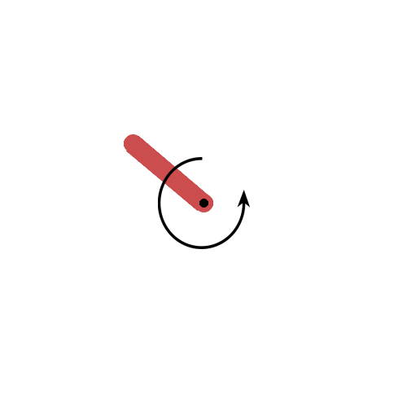
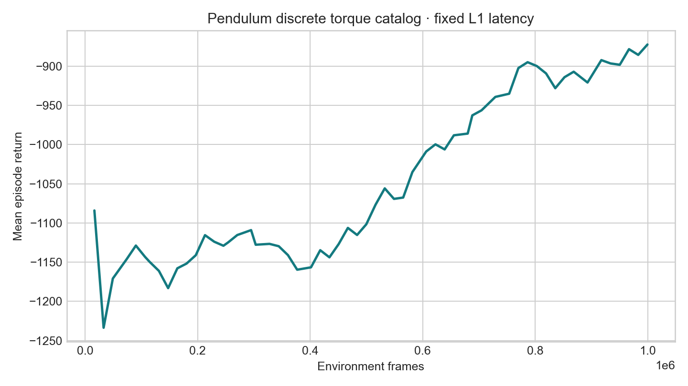
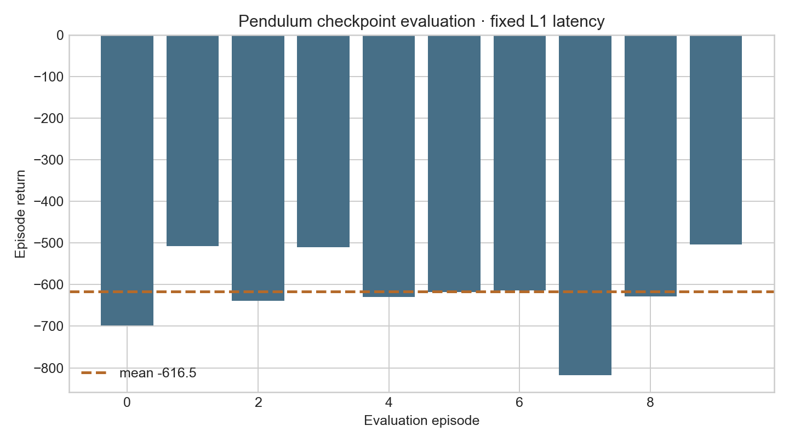
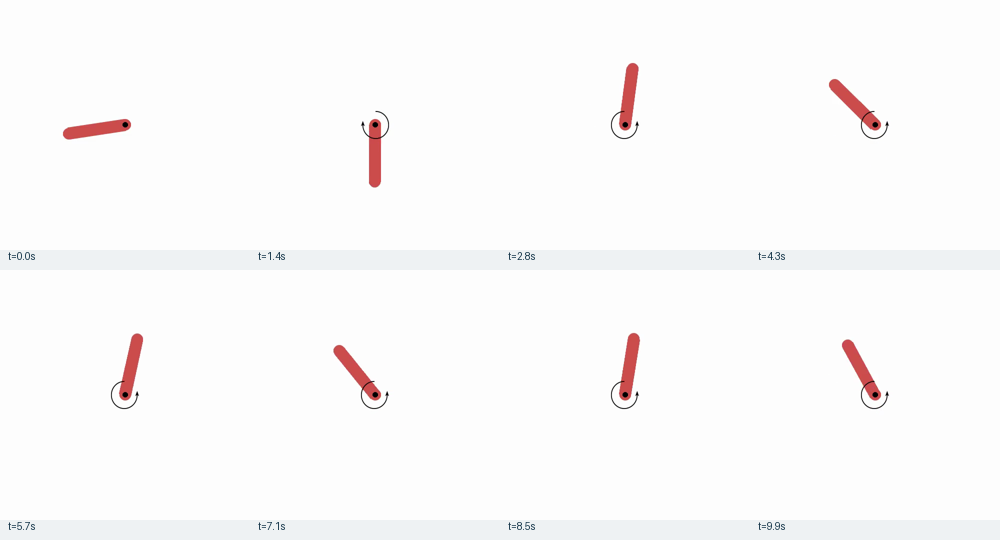

API + wrapper
Runtime spaces, physics timestep, RGB rendering, five torque mappings, zero-latency parity, and L1 queue behavior were exercised.
latency-sensitive-bench / verified release example
A transparent record of how the agent inspected Pendulum-v1, asked the task author to approve a finite torque catalog, froze a one-raw-frame latency contract, trained APPO, and evaluated the resulting checkpoint through latency-bench.
01 · Outcome
Runtime spaces, physics timestep, RGB rendering, five torque mappings, zero-latency parity, and L1 queue behavior were exercised.
APPO trained for 1,015,808 environment frames with fixed one-frame action latency and produced latest and best checkpoints.
The latest checkpoint completed ten 200-step L1 episodes with action, step, latency, metric, and video artifacts.
No rollout dataset, LeRobot conversion, OpenVLA SFT, or StarVLA online evaluation was requested or executed.
02 · Reconnaissance
Pendulum-v1, built into Gymnasium 0.29.1.Box(-2, 2, (1,), float32).[cos θ, sin θ, angular velocity], shape (3,).dt=0.05 s, therefore 20 raw ticks/s.(500, 500, 3) uint8.g=10.0.[-2, -1, 0, 1, 2].zero_torque as the delayed queue's pending action.render_fps=30—as one raw tick.L1=50 ms.The synchronized API probe JSON is the source for runtime facts. The five-action catalog is deliberately labeled as user-approved rather than API-derived.
03 · Generated implementation
latency_bench/envs/tasks/pendulum.pyRegisters LatencyBench/PendulumDiscrete-v0 and maps a catalog ID to a native (1,) float32 torque.
scripts/scaffold_gymnasium_pendulum.pyProbes the pinned API and emits the accepted environment block without guessing the action catalog.
configs/examples/gymnasium/pendulum/Contains grouped small-model train/eval, latency-bench eval, and unexecuted StarVLA eval configs.
tests/envs/tasks/test_gymnasium_pendulum.pyChecks registration, torque dtype/value, no-op latency semantics, probe output, timing, and contract equality.
Wrapper source · Scaffold source · Four configs · Semantic tests
04 · Immutable task contract
observation_stride = 20 / 20 = 1 · latency_raw_frames = ceil(50 × 20 / 1000) = 1
env:
name: gymnasium
task_name: pendulum_discrete
env_id: LatencyBench/PendulumDiscrete-v0
registration_imports: [latency_bench.envs.gymnasium_pendulum]
make_kwargs:
base_env_id: Pendulum-v1
render_mode: rgb_array
torque_values: [-2.0, -1.0, 0.0, 1.0, 2.0]
base_make_kwargs: {g: 10.0}
env_fps: 20
obs_fps: 20
frame_stack: 1
noop_action: zero_torque
action_map:
torque_clockwise_hard: 0
torque_clockwise_soft: 1
zero_torque: 2
torque_counterclockwise_soft: 3
torque_counterclockwise_hard: 4
action_order:
- torque_clockwise_hard
- torque_clockwise_soft
- zero_torque
- torque_counterclockwise_soft
- torque_counterclockwise_hard
base_prompt: >-
Swing the pendulum upright and keep it balanced by applying torque.
Choose exactly one action from: torque_clockwise_hard,
torque_clockwise_soft, zero_torque, torque_counterclockwise_soft,
torque_counterclockwise_hard.The four resolved configs were loaded with latency_bench.core.config.load_config() and their final env mappings compared equal. The exact emitted YAML is preserved in env_block.yaml.
05 · Contract propagation
env.name=gymnasium selects the separate adapter; the registration import makes the task-owned ID available.
The policy emits IDs 0–4. The wrapper maps them to the frozen torque array before native env.step().
The integration stores task identity, ordered labels/values, no-op ID, prompt, clock, and constructor kwargs in config.json.
The checkpoint ID is decoded through the same action order while the scheduler applies it one raw tick later.
| Contract field | Training use | Evaluation use |
|---|---|---|
env_id, imports, kwargs | Reconstruct the exact wrapped task | Construct the same task through GymnasiumEnvAdapter |
action_order, values | Expose Discrete(5) and decode IDs to wrapper actions | Decode checkpoint IDs without reordering |
noop_action_id=2 | Initialize the delayed action queue with zero torque | Apply zero torque before the first L1 result is ready |
env_fps=obs_fps=20 | One decision per native physics step | Convert 50 ms to exactly one raw frame |
base_prompt, frame stack | Persisted for later handoff | Unused by the small policy; retained for compatible future rollout/VLA work |
06 · Verification gates
Pendulum plus generic adapter, Sample Factory contract, and StarVLA contract tests passed; seven upstream deprecation warnings.
Seed 123 and eight catalog actions matched direct Gymnasium observations, rewards, termination, and truncation exactly.
Issued ID 4 first applied ID 2; on the next raw tick ID 4 became active. Every delay was one raw frame.
Policy observation remained (3,) float32; renderer remained (500,500,3) uint8.
07 · Command ledger
vast-4090-latency: Python 3.10.20, Torch 2.11.0+cu128, CUDA 12.8, RTX 4090, Gymnasium 0.29.1, Sample Factory 2.1.1. The shared environment is Conda latency.
source /root/miniconda3/etc/profile.d/conda.sh
conda activate latency
cd /workspace/latency-sensitive-bench
SDL_VIDEODRIVER=dummy pytest -q \
tests/envs/tasks/test_gymnasium_pendulum.py \
tests/envs/adapters/test_gymnasium_env_adapter.py \
tests/training/test_gymnasium_sf.py \
tests/policies/test_generic_gymnasium_starvla_policy.py
SDL_VIDEODRIVER=dummy python scripts/scaffold_gymnasium_pendulum.py \
--report-path /workspace/pendulum-adapt/api_probe.json \
--env-yaml-path /workspace/pendulum-adapt/env_block.yamlSDL_VIDEODRIVER=dummy python \
artifacts/pendulum/repro_scripts/zero_latency_parity.py
SDL_VIDEODRIVER=dummy python \
artifacts/pendulum/repro_scripts/l1_scheduler_trace.pyWANDB_MODE=disabled SDL_VIDEODRIVER=dummy python -m training.train \
--config configs/examples/gymnasium/pendulum/small_model_train.yamlCompleted 1,015,808 frames at 3,340.1 overall FPS. Latest checkpoint: outputs/examples/gymnasium_pendulum/checkpoints/gymnasium_pendulum_discrete_fixed_l1/checkpoint_p0/checkpoint_000001984_1015808.pth.
WANDB_MODE=disabled SDL_VIDEODRIVER=dummy python -m latency_bench.run \
--config configs/examples/gymnasium/pendulum/small_model_eval.yaml \
--checkpoint-path outputs/examples/gymnasium_pendulum/checkpoints/\
gymnasium_pendulum_discrete_fixed_l1/checkpoint_p0/\
checkpoint_000001984_1015808.pth \
--episode-start 0 --episode-count 10All episodes reached the 200-step time limit. Mean return −616.511, standard deviation 91.585, mean scheduled latency 50 ms.
08 · Evidence ledger




The complete ignored experiment directory is outputs/examples/gymnasium_pendulum/, including the 3.2 MB checkpoints and raw JSONL records. Bulky runtime output is not duplicated into this documentation folder.
09 · Optional continuation
starvla_eval.yaml is a contract template, not evidence of a model.Prepare collection and conversion YAML files using the collection guide. Select the checkpoint under outputs/examples/gymnasium_pendulum/checkpoints/gymnasium_pendulum_discrete_fixed_l1 and the native action carrier.
python -m latency_bench collect --config my_collect.yaml
python -m latency_bench convert --config my_convert.yaml10 · Isolation and limitations
env.name=gymnasium branch is reused; no new legacy dispatch is added.dt=0.05.For the normative adaptation procedure, see the Gymnasium adaptation guide. For the earlier continuous-action reference, see the Inverted Pendulum walkthrough.